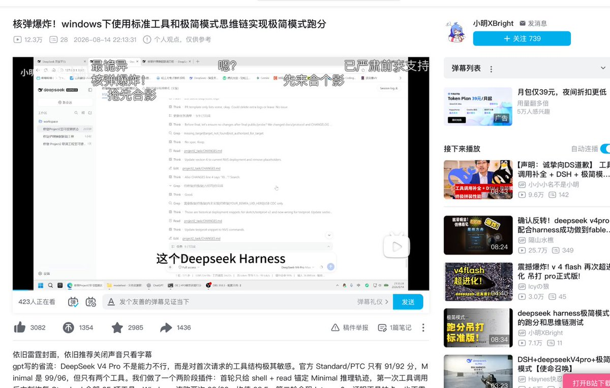
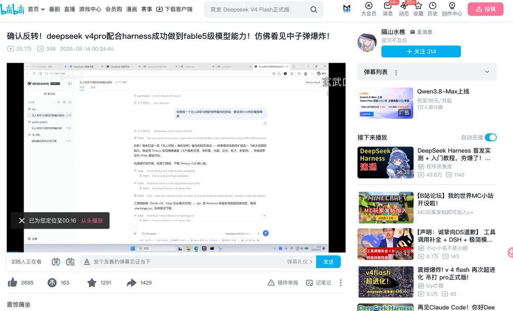

大狐帝国史官邹智萱（笔名段歌文）
@Rococo90933671
@MaxForAI 个人认为是这样也不奇怪，因为B站这种平台本来就是包罗万象的，只是我们能刷到的范围是有限的


Max For AI
@MaxForAI
一个暴论：B站是现在国内最热闹的技术论坛。
今天看到推上有人讨论B站上面都是AI大佬。
其实这两周一直在追 DeepSeek V4，我也发现B站可能已经成了国内最被低估的AI技术社区之一。
以前我找最新的 AI 信息，基本就是 X、GitHub、Hugging Face，再加几个技术论坛（L站V站之类的）。 https://t.co/RTnOA4G7hm